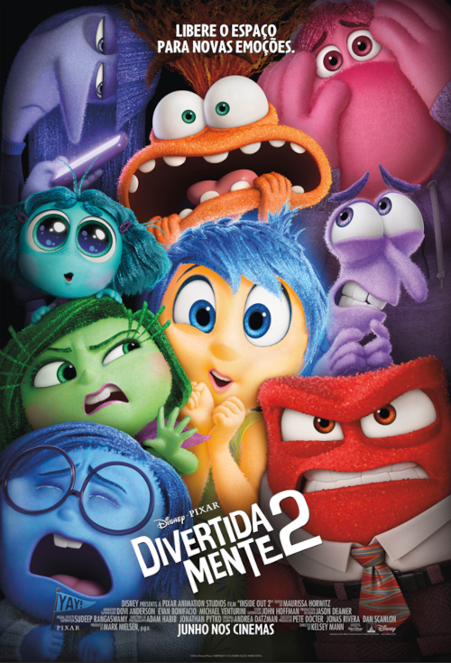
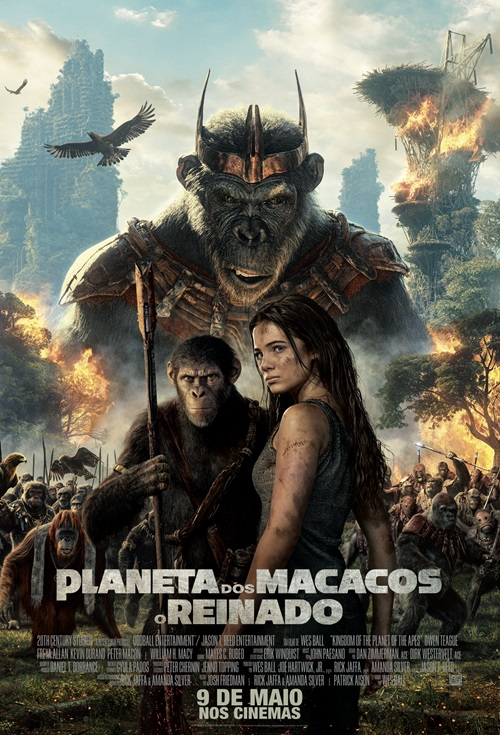

Filmes em Cartaz
-
Godzilla e Kong - O Novo Império
Godzilla e Kong - O Novo Império é do mesmo diretor do sucesso Godzilla vs. Kong (2021). Nesta sequência do Monstroverso, a humanidade está para descobrir, da pior forma possível, que está sob uma ameaça colossal, até então escondida no interior do planeta Terra.
-
Capitão América - O Primeiro Vingador
"Capitão América: O Primeiro Vingador" (2011) é um filme de super-herói que narra a história de Steve Rogers, um jovem determinado que, após receber um soro experimental durante a Segunda Guerra Mundial, se transforma no poderoso Capitão América. Ele enfrenta o vilão Caveira Vermelha e sua organização Hydra para salvar o mundo da tirania nazista.
-

Divertidamente 2
Divertida Mente 2, da Disney e Pixar, volta a entrar na mente da agora adolescente Riley, no momento em que a Sala de Comando passa por uma repentina demolição para dar lugar a algo totalmente inesperado: novas Emoções. Alegria, Tristeza, Raiva, Medo e Nojinho, que há muito tempo comandam uma operação de sucesso, não sabem ao certo como se sentem quando a Ansiedade, a Inveja, o Tédio e a Vergonha chegam.
-
Pássaro Branco
Da autora do best-seller Extraordinário, o livro que desencadeou um movimento para `escolha ser gentil´, vem o próximo capítulo inspirador. Em Pássaro Branco – Uma História De Extraordinário, seguimos Julian (Bryce Gheisar), que tenta se reencontrar desde que foi expulso de sua antiga escola pelo tratamento que teve com Auggie Pullman. Para transformar sua vida, a avó de Julian (Helen Mirren) conta sua própria história de coragem durante sua juventude na França ocupada, onde um menino a protege de um perigo mortal. Eles encontram o primeiro amor em um mundo mágico e deslumbrante criado por eles mesmos com a imaginação, enquanto a mãe do menino (Gillian Anderson) arrisca tudo para mantê-la segura.
-
Furiosa: Uma saga Mad-Max
À medida que o mundo desmorona, a jovem Furiosa é capturada do Lugar Verde das Muitas Mães e cai nas mãos de uma grande Horda de Motociclistas liderada pelo Senhor da Guerra Dementus. Ao atravessarem o Deserto, eles encontram a Cidadela presidida pelo Imortal Joe. Enquanto os dois tiranos lutam pela dominação, Furiosa deve sobreviver a muitas provações ao reunir os meios para encontrar o caminho de volta para casa.
-

Planeta Dos Macacos: O Reinado
Diretor Wes Ball dá nova vida à franquia épica global após o reinado de César, em que os macacos são a espécie dominante e vivem harmoniosamente e os humanos foram reduzidos às sombras. À medida que um novo líder símio tirânico constrói o seu império, um jovem macaco inicia uma jornada angustiante que o levará a questionar tudo o que sabia sobre o passado e a fazer escolhas que definirão um novo futuro. O novo espetáculo de ação e aventura da 20th Century Studios, Planeta dos Macacos: O Reinado, estreia exclusivamente nos cinemas de todo o país em 9 de maio de 2024.